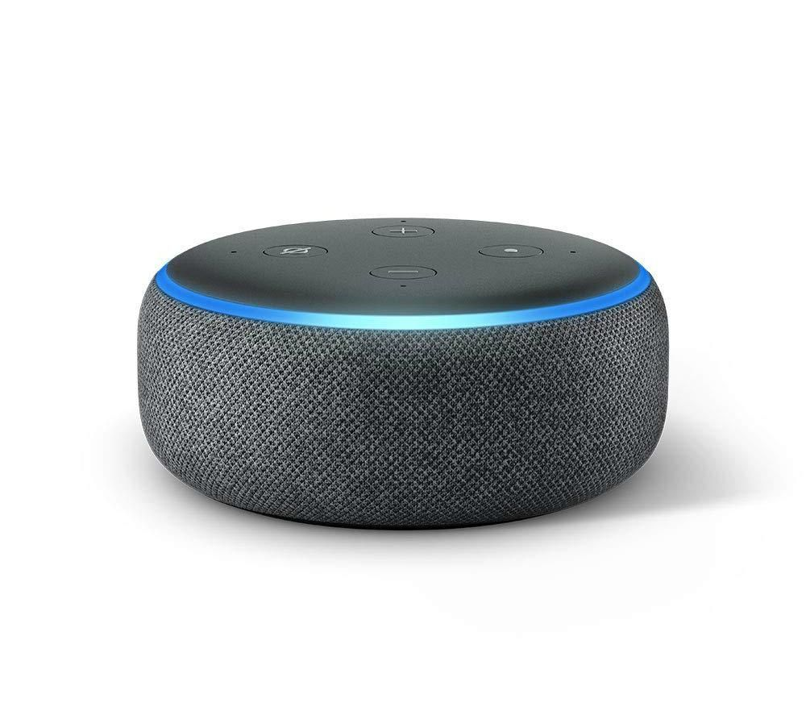
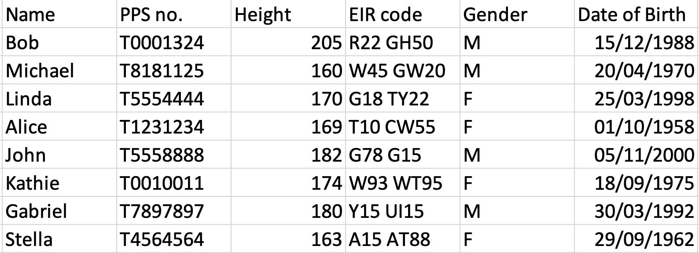
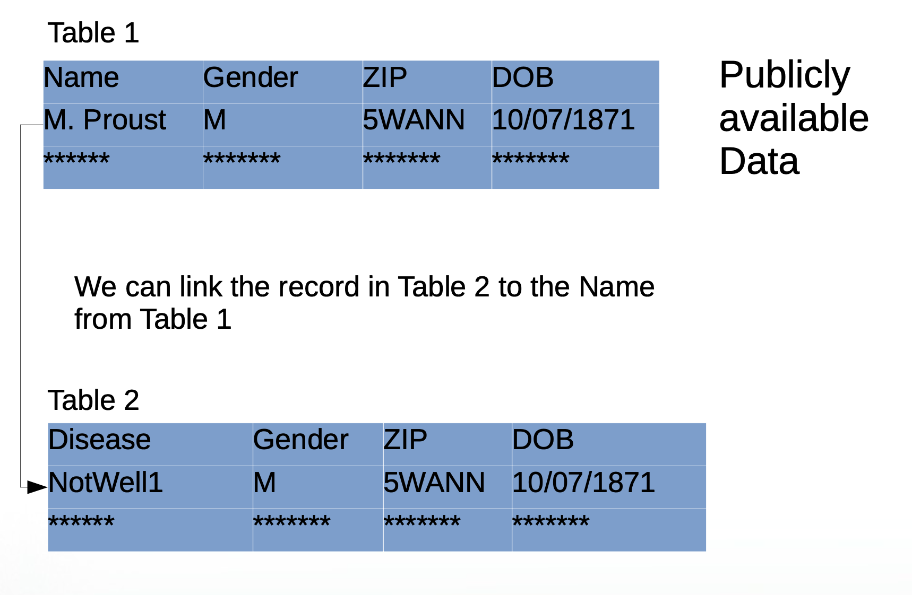
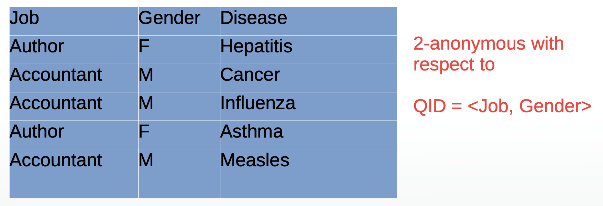
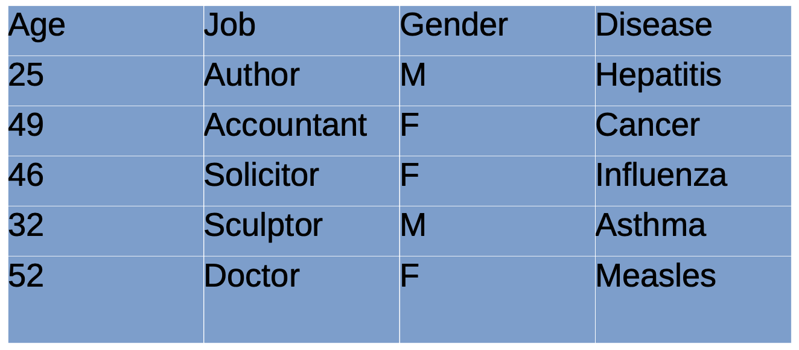
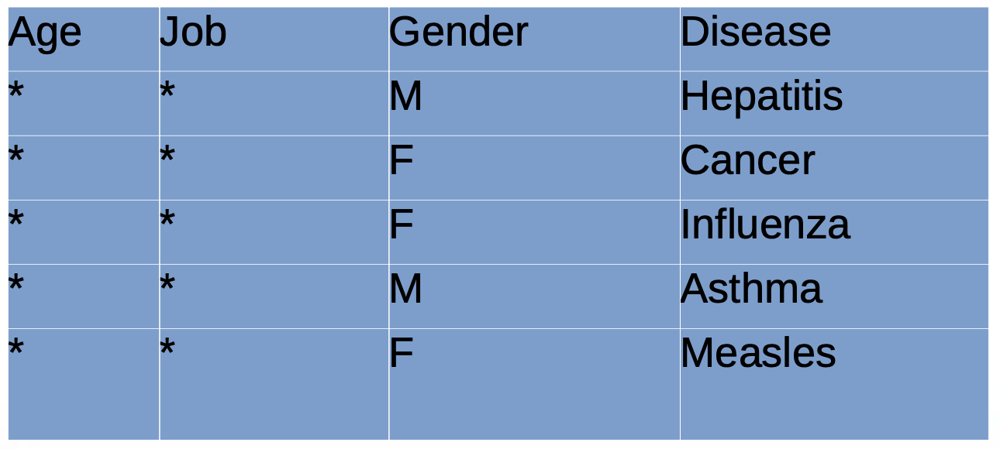
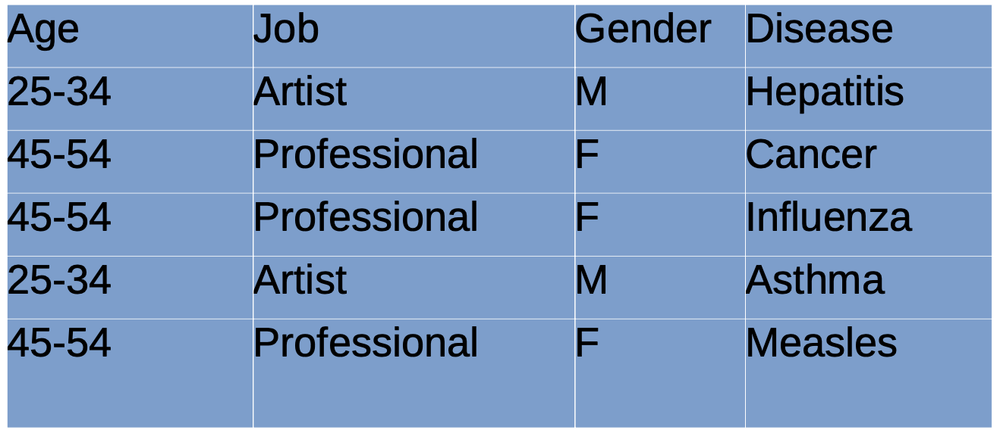
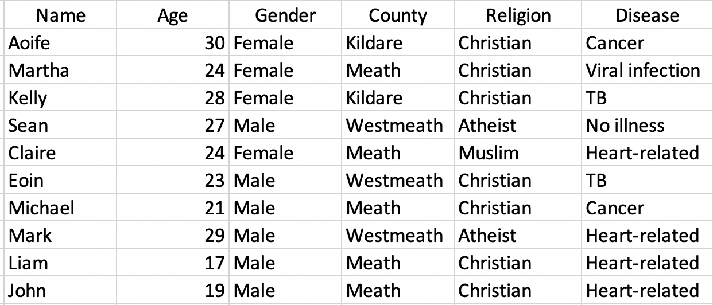
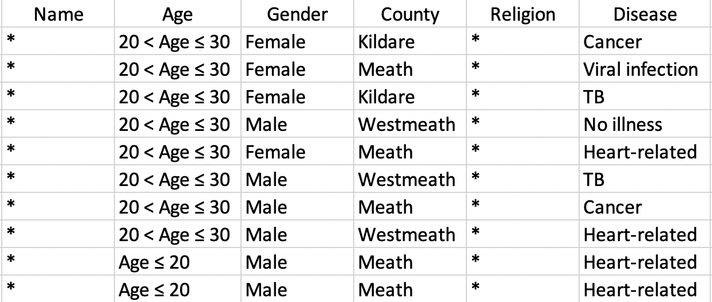

Introduction to Data Annonymisation
Let’s start with a case study
- Every minute of every day, dozens of companies are logging the locations of millions of people and storing it in gigantic datasets
- The NY Times Privacy Project obtained one such file
- It holds 50 billion location pings from the phones of over 12 million Americans in 2016 and 2017
Data Anonymisation
Tracking is hard to avoid
Consider your daily commute: Would any other smartphone travel directly between your house and your office every day?
Describing location data as anonymous is a completely false claim
Really precise, longitudinal geolocation information is absolutely impossible to anonymise
“DNA is probably the only thing that’s harder to anonymise than precise geolocation information” (Paul Ohm, law professor and privacy researcher)
You can follow a few steps to make it harder for companies to track you
such as disabling location access for particular apps
and being informed about what tracking information apps are using
https://www.nytimes.com/wirecutter/blog/how-iphone-apps-track-you/
Key privacy questions
Disclosure Control:
Reveal no more than intended
In particular, protect personal information while allowing inference at a population or aggregate level
Privacy-Utility Trade-off:
Data released should still be useful
We can always protect privacy by releasing nothing at all!
Privacy and modern technology

“You have zero privacy anyway, get over it”
Sun Microsystems CEO Scott McNealy, 1999
“If you have something that you don’t want anyone to know, maybe you shouldn’t be doing it in the first place”
Google CEO (2001–2011) Eric Schmidt, 2009
Definitions of privacy
A general definition of privacy is difficult to formulate.
For the release of statistical databases (summary statistics), the following definition was given by Dalenius (1977)
“Nothing can be learned about any individual after the release that couldn’t have been known prior to its release.”
At first glance, this seems reasonable.
However:
Alice knows Bob’s height is 5cm less than the national average
The central statistics office releases a database containing the average height of the country
Alice now knows Bob’s height
Dalenius’ definition is too restrictive?
- Side information plays a key role.
Extreme approaches to privacy
Easiest way to protect privacy is to reveal nothing
It certainly meets the requirement of disclosure control
Not very useful or constructive, though!
Variables / Attributes
In privacy research, the variables (or attributes) recorded for each individual are generally split into 3 categories
Identifiers (name, PPS no., passport no.)
Sensitive
Non-sensitive
Deciding which attributes belong to which class is not always straightforward!
What is anonymisation?
“Anonymisation is the process of either encrypting or removing personally identifiable information from data sets, so that the people whom the data describe remain anonymous”
Naive anonymisation
Everything should be OK if we remove the identifiers, right?

What could possibly go wrong?
- People know more than just what you tell them!
Combinations of non-sensitive variables can identify individuals (Quasi-identifiers)
Latanya Sweeney (2000) showed that a combination of ZIP code, Gender and Date of Birth uniquely identifies 87% of US population
Massachusetts’ government released anonymised medical records for research purposes
L. Sweeney used a copy of voter records containing names as well as ZIP, gender and DOB
Cross-referencing the two datasets, she identified the state governor’s records in the medical data!

Netflix release anonymised movie recommendations to help develop better recommender systems
- Data was cross-referenced with IMDB database (which isn’t anonymised) to reveal preferences of individual users
AOL released “anonymised” search logs in 2006
- … they forgot to factor in that sometimes people search their own names
k-anonymity
Simple Idea: Release table so that everyone looks like at least \(k-1\) others with respect to a QID
A table satisfying this is said to be k-anonymous

Two broad approaches used to produce k-anonymous tables:
Suppresion
Generalisation
Want to suprpess/generalise as little as possible to maintain data utility!
k-anonymity: example

k-anonymity: Suppression

k-anonymity: Generalisation

Problem of homogeneity: when all values of the sensitive variables for the \(k\) individuals are the same, e.g.

Problem of : when all values of the sensitive variables for the \(k\) individuals are the same, e.g.

- If we know John, who’s 19 years old and from Meath, is on the database, we can correctly infer he has a heart-related condition
Other ideas
l-diversity: An extension to k-anonymity
Attempts to solve the problem that homogeneity causes
The basic idea is to have individuals with distinct values for the sensitive variable, overcoming the problem presented in the previous example
Differential privacy:
Core idea: add random noise to the answer to a numerical variable
If we choose the noise correctly, the answer doesn’t vary much if one person changes their entry
Participation in the database carries little risk for an individual
Some More Anonymisation Methods
Microaggregation
A perturbative method that is typically applied to continuous variables.
The idea is that records are partitioned into groups; within each group, the values of each variable are aggregated.
Typically, the mean is used to aggregate the values, but other robust methods are also possible.
Individual values of the records for each variable are replaced by the group aggregation value.
Some More Anonymisation Methods
Shuffling
Shuffling simulates a synthetic value of the continuous key variables conditioned on independent, non-confidential variables. It works as follows:
assume that we have two continuous variables containing sensitive information on income and savings.
These variables are used as regressors in a regression model where suitable variables are taken as predictors, like age, occupation, race, education.
Of course it is of crucial to find a good model having good predictive power.
New values for the continuous key variables, income and savings, are simulated based on this model
However, these expected values are not used to replace the original values, but a shuffling of the original values using the generated values is carried out.
This approach (reverse mapping) is applied to each sensitive variable can be summarized in the following steps:
rank original variable
rank generated variable
for all observations, replace the value of the modified variable with rank i with the value of the original sensitive variable with rank i.
once finished, the modified variable contains only original values and is finally used to replace the original sensitive variable.
It can be shown that the structure of the data is preserved when the model fit is of good quality.
Randomised responses (Warner, 1965)
US military wanted to know whether soldiers were smoking marijuana during the Vietnam war
Ask two questions, the first one harmless, e.g. ‘Is the sky blue?’, and the second ‘Do you smoke marijuana?’
Respondents toss a coin. If heads, answer question 1, if tails, answer question 2
They now answer truthfully, since there is no way of knowing which question they were answering
It is easy to estimate the true proportion of the population that smokes marijuana from the responses obtained